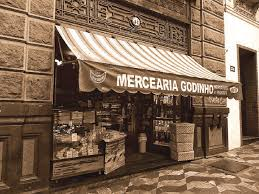

Mercearia Godinho
História da mercearia
A Casa Godinho foi fundada em 1888 por um imigrante português chamado José Maria Godinho na Praça da Sé, sendo transferida para a rua Libero Badaró, 340, no Centro, no ano de 1924, onde funciona até hoje.
Era aqui que grandes nomes da história, como Assis Chateubriant, da política, como Adhemar de Barros e Jânio Quadros, da indústria, como José Ermírio de Moraes, entre tantos outros, abasteciam suas casas quando procuravam produtos de qualidade
Produtos